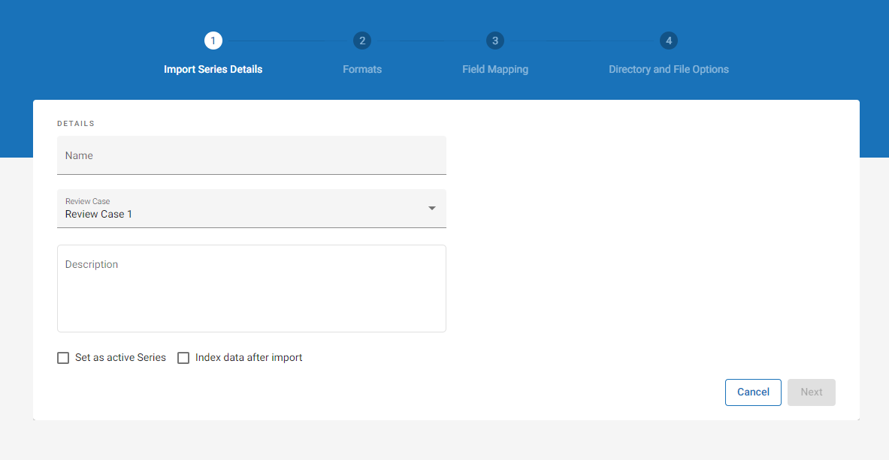
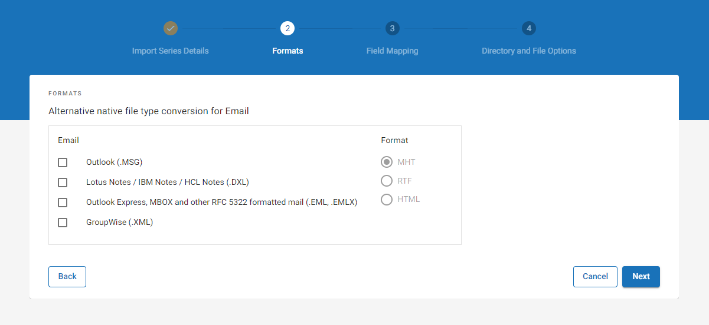
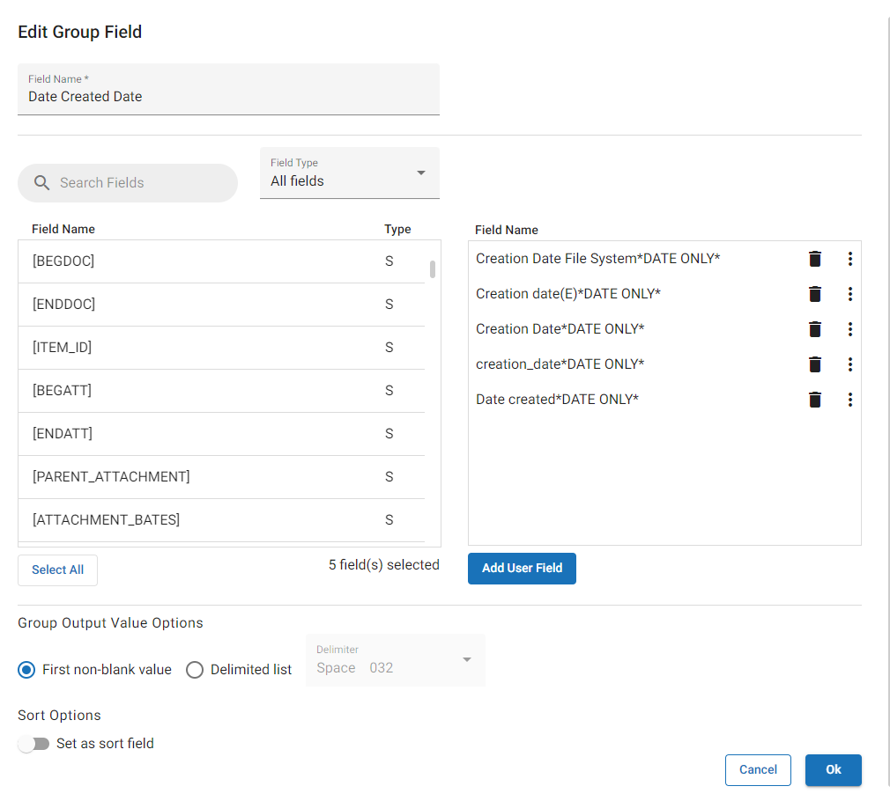

Open Case Management and locate the Processing case for which you would like to create an import series.
Click the hamburger icon corresponding to the required case.

In the menu that displays, select Case Settings. The work area opens. Select the Load to Review tab near the top.
On the Review Importing page, select Create Import Series.
Complete the first step of the wizard by defining the import series details.

Step One Options
|
Option |
Description |
|---|---|
|
Name |
Click the Name field and enter a name for the import series. |
|
Review Case |
From the drop-down menu, select the Review case into which you would like the documents to be imported. |
|
Description |
You can add an optional description to provide additional information or context to the import series. This may be helpful if you have multiple import series defined for a single Processing case and would like to further differentiate them. |
|
Set as active Series |
Select this checkbox to set the import series as active. When active, the import series is able to promote ingested documents into the selected Review case. When inactive, the import series is "turned off" and no promotion can take place. |
|
Index data after import |
Select this checkbox to index the imported data after processing completes. The indexed data becomes searchable in Review. If you leave this checkbox unselected, you can also manually index your data after the fact. See |
When finished, click Next to proceed to the next step in the wizard.
Complete the second step of the wizard to convert specific native file types to alternative file types during import.

Step Two Options
-
Select email type(s) for conversion. The selected email types are converted to the alternative file format you select in the next step.
Email
Description
Outlook
Select this option to import an alternate native file for Outlook files. The default import format is MSG.
Lotus Notes/ IBM Notes/ HCL Notes
Select this option to import an alternate native file for Lotus Notes/ IBM Notes/ HCL Notes files. The default import format is DXL.
Outlook Express, MBOX and other RFC 5322 formatted mail
Select this option to import an alternate native file for Outlook Express, MBOX, and other RFC 5322 formatted mail files. The default import format is EML or EMLX.
GroupWise
Select this option to import an alternate native file for GroupWise files. The default import format is XML.
-
Select one of the following formats. The email types selected in the previous step are converted to the selected file format during import:
Format
Description
MHT
An MHT is an Archived Web Page file with information in Multipurpose Internet Mail Extension HTML [MHTML] format with an MHT extension. All relative links in the Web page are remapped and the embedded content is included in the MHT.
RTF (Rich Text Format)
Uses Microsoft Word to open the MHT and saves it in RTF; a more widely accepted format.
HTML
HTML documents can have inline images; the images themselves are not included in the HTML. The images must be included in the import in order to access the inline images.
When finished, click Next to proceed to the next step in the wizard.
Complete the third step of the wizard to select fields for import and to map them to corresponding Review fields.

Step Three Options
-
Determine what fields to include in the import. Fields that display in the list box are included for import, while the fields that display in the Add Fields dialog are excluded.

Note: You can select the checkboxes beside the fields and choose Remove Selected to remove the specified fields from the import.
To select your import fields:
-
Select Load Standard Fields to use the default list of fields.

Note: When you select this option, a confirmation dialog appears. Select Load Defaults to proceed with the update. Any previous changes you made to the field list are erased.
-
Select Load INI File to use a pre-generated list of fields saved to an INI file. Navigate to the file in the dialog box that displays and then select Open.
-
Select individual fields by selecting the Add Fields button. You can add:
System/Metadata/Flags
To add System/Metadata fields or QC Flags to the import:
-
Select the Add Fields button, then choose System/Metadata/Flags.
-
Select the fields you would like to include for import. Selected fields are highlighted.
Note:
-
You can search for fields by typing into the search field.
-
Similarly you can filter fields based on type by selecting the All Fields drop-down menu and selecting the type you would like to see.
-
Click Select All to highlight the full list of fields.
-
-
When all needed fields have been selected, click OK. The dialog closes and the selected fields are included in the import.
User fields
A User field is a static field created by the user with a specified name AND value. To insert a custom User field:
-
Select the Add Fields button, then choose User Field.
-
Enter a Field Name.
-
Enter an optional Field Value. This is a specified value that gets imported with every document. For instance, a custom User field might be "Case Number," with a Field Value as "123456."
-
Click OK.
Group fields
A Group field can be used to combine the values of multiple fields and force them into a single field on import. To insert a custom Group field for import:
-
Select the Add Fields button, then choose Group Field.
-
Enter a Field Name.
-
Select the fields you would like to combine into your group field. Selected fields are added to the Field Name list box on the right.

Note:
-
You can search for fields by typing into the search field.
-
Similarly you can filter fields based on type by selecting the All Fields drop-down menu and selecting the type you would like to see.
-
Click Select All to highlight the full list of fields.
-
Change the order of the fields by selecting the
 button and choosing one of the available re-ordering options.
button and choosing one of the available re-ordering options.
-
-
If you would like to include a custom User field as one of the Group fields, you can likewise do so on this page.
-
Select Add User Field.
-
Enter a Field Value. This is a specified value that gets imported with every document. For instance, a custom User field might be "Case Number," with a Field Value as "123456."
-
Click OK.
-
-
Determine your Group Output Value option:
-
First non-blank value: Select this option if you would like to present the first non-blank value of the selected fields, starting with the top field in the list and moving down.
-
Delimited list: Select this option if you would like to present the values of the selected fields so that they are presented together, separated by a delimiter of your choice. Choose the needed delimiter from the drop-down option.
-
-
Enable the Set as Sort Field option if you would like to set the field as such. For more information about Sort Fields, click
When a field is marked as a Sort field, it applies the value of the selected field to all family members of a parent item. This allows sorting on the specified field in an external application to represent a family. For example, when the Sent Date field is made into a Sort field, the value of the Sent Date field for an email is used as the value of the same field in the exported load file for all of the email’s attachments.
Note: The Set as Sort Field option only displays for those fields that can be sorted, such as a metadata field.
-
-
-
Map the import fields to those that will display in Review.
-
Click the Map Fields button to automatically map fields by name. You can select either:
-
All fields: Maps every import field to its corresponding Review field for every instance in which the two names are the same. For instance, the "Email From" import field will automatically be mapped to the "Email From" Review field, as the two names are the same.

Note: This option updates the mapping for all import fields that have a corresponding review field with the same name. As such, this option overwrites mapped custom Review fields when standard Review fields exist that share the same name as the Import field. For example, if you mapped the "Email From" Import field to a custom "Sender" Review field, that mapping would be overwritten when you select the All Fields option. The "Email From" Import field would once again be mapped to the "Email From" Review field.
-
Only unmapped: For any unmapped fields, this option maps each import field to its corresponding Review field for every instance in which the two names are the same.
-
-
For fields that are already mapped, inspect the

-
Review fields that have not yet been mapped display in red. Click the Review field and select the correct field from the dropdown.

Note: To map a custom Import field to a custom Review field, the Review field must already be created. However, if the Review field has not yet been created, you may select Do Not Map on this step. You could then finish creating the import series so that your changes are saved, and then create the custom Review field after the fact. Once the custom Review field has been created, you could then return to edit the import series and map the field at that point. For instructions on how to create a custom Review field, see Define Database Fields.
-
-
Select Populate Parent Documents with Child Field Values if you would like to populate parent documents with field values that are normally only populated on child documents. For instance, the "Parent ID" field, which is usually only populated on child documents, would also be populated on the parent document itself when this option is selected.
-
Perform additional operations by selecting the
button. Depending on the field selected, you can:Option
Description
Edit
Applicable for User or Group fields. Update the field as needed.
Set as Sort Field
Applicable only for those fields that can be sorted, such as a metadata field.
When a field is marked as a Sort field, it applies the value of the selected field to all family members of a parent item. This allows sorting on the specified field in an external application to represent a family. For example, when the Sent Date field is made into a Sort field, the value of the Sent Date field for an email is used as the value of the same field in the exported load file for all of the email’s attachments.
Map by Name
Maps the import field to its corresponding Review field when the two names are the same. For instance, the "Email From" import field will automatically be mapped to the "Email From" Review field when this option is used.
Do Not Map
Sets the field to Do Not Map. This option can be helpful when you need to map the Import field to a custom Review field that you have not yet created. You may select Do Not Map on this step, then finish creating the import series so that your changes are saved. After saving the import series, you can then create the custom Review field after the fact. Once the custom Review field has been created, you could then return to edit the import series and map the field at that point. For instructions on how to create a custom Review field, see Define Database Fields.
-
There are several field types that can be imported. These field types are designated as follows:
TYPE
Description
S (System Fields)
Standard system fields in
M (Metadata Fields)
Metadata fields are retrieved from documents during processing.
F
(QC Flags)
The QC flags that display in the list are both system QC flags and any user defined QC flags.
U and G
(User and Group Fields)
These comprise two types: User [U] and/or Group [G]. These fields are created through the Insert Custom Fields function. When you create a custom User field and add an optional field label, the field label you provide gets applied to every document during import. Otherwise, the value may be blank. The Group fields are space-delimited combinations of System (S) and/or Metadata (M) field types.
Complete the fourth step of the wizard to set additional directory and file options.

Step Four Options
-
Define your Output Directory: indicate the directory where the imported data will be copied and saved.
-
Copy files to output directory (Recommended): This option stores a copy of the imported files in the directory defined above.
-
eCapture Storage: When this option is selected, the files are stored in working directories created in eCapture during processing.
Note: When eCapture storage is selected, if you archive or delete data from the client directory, documents may no longer display properly in Review, as they are referenced in this location.
-
-
Provide a Volume number.
-
Define image key (BEGDOC) numbering:
-
User Defined (Recommended)
-
(Optional) Provide a prefix for each imaged document. The prefix chosen will be appended to the beginning of each image key.
-
(Optional) If applying a prefix to each image key, choose a delimiter to separate the prefix from the image number. Options include:
-
None
-
Decimal
-
Hyphen
-
Underscore
-
Space
-
-
Provide an image number.
-
-
Use filename
"Use filename" should only be used with previously processed and uniquely numbered documents, which are named with bates numbers (e.g., PDF files named with bates numbers). Using this option on documents with original filenames can potentially overwrite files.
-
-
When all options have been defined, click Finish to create the Import Series.